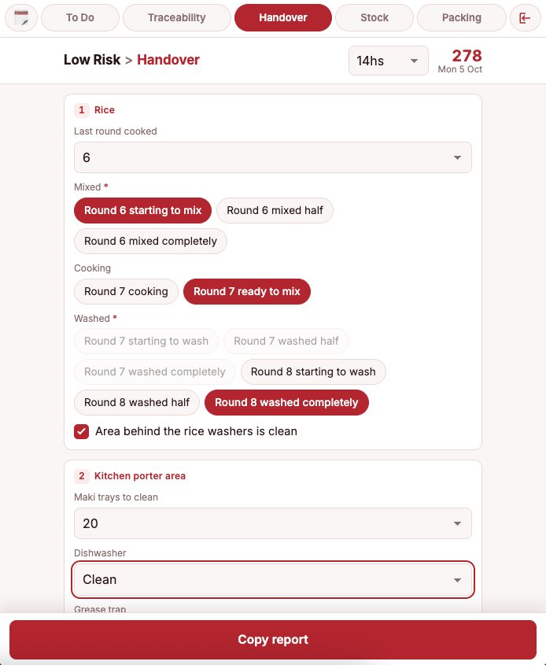
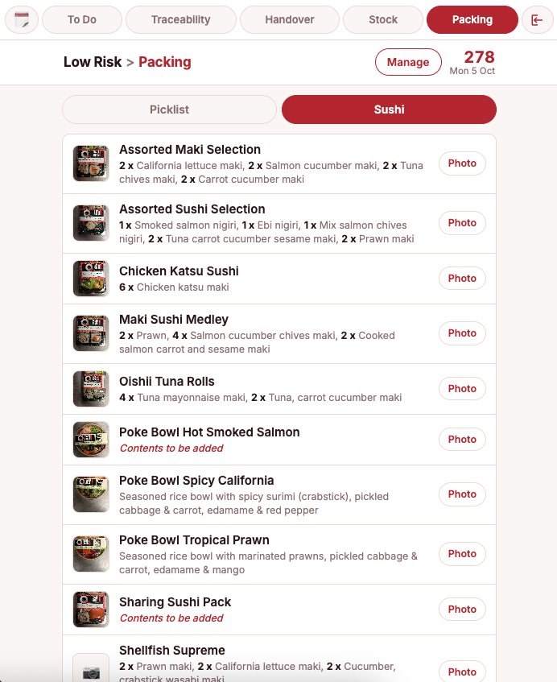
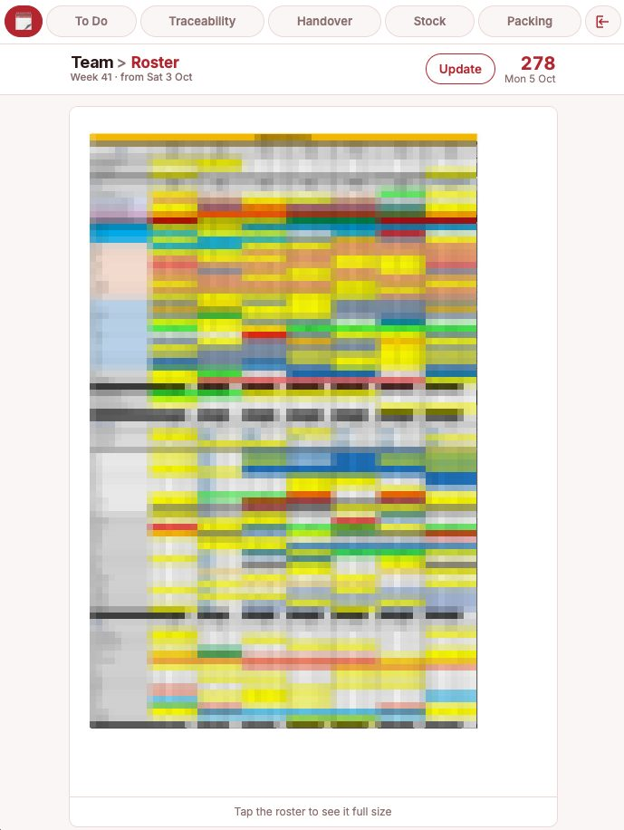

To Do
The checklist of the shift. It is the first screen the app opens on, and it is ready every morning without anyone setting it up.
- Daily tasks that reset by themselvesTransfers, goods in, dispatch, reports, orders and the rest of the routine appear unticked every day, in the order the shift actually runs.
- Weekly tasks only on their daySome checks happen once a week. They are marked as weekly and only show up on the day they are due, so the list never carries noise.
- Tasks added on the flyAnything that comes up during the shift goes in with the Add box. New tasks sit on top, show when they were added, and stay until they are done, even across days.
- A Done section instead of deletingTicking a task stamps the time and moves it to a collapsed Done section at the end, so the open list only shows what is left.
- ManageAdd, rename, reorder with arrows or remove the daily tasks.
Traceability
The morning picking of ingredients for production. Every item handed over has to be recorded with its batch code, and this screen keeps that record right.
- Batch codes in Julian date formatEach code is the day of the year plus a fixed supplier suffix, for example 275-01. The day changes with − and + or by typing it, and the app won't accept a date in the future.
- More than one batch when neededWhen two lots are in use, "+ batch" adds a second code. The next morning only the newest one stays, so the list starts clean.
- Shared batches move togetherProducts cut from the same lot share one code: changing it once updates all of them.
- Given box and clear statesThe Given box records the quantity handed over so far. Each row shows where it stands: Red: to doYellow: startedGreen: done
- Done collapses the rowThe tick turns the item into a short green line with its code and quantity, keeping its place in the list so the paper sheet can be filled in top to bottom.
- Smart starting pointsItems that are always available start the day as done, fresh deliveries start with today's date, and every code is kept at or above the latest known batch.
- kg to boxesFor products requested by weight, a calculator turns the kilos into boxes using the right weight per box.
- Manage and ResetManage adds, renames or removes items, changes supplier codes and pins items as always done. Reset clears the day.

Handover
The shift report for the next team, posted in the WhatsApp group. Instead of writing it from memory, a short form produces the message.
- A guided form by areaRice, kitchen porter, vegetables and oven, back area and the afternoon picklist, plus a free Extra field. Dropdowns, chips and checkboxes come with sensible defaults.
- Rules built into the rice processRounds follow their real order: mixing, cooking and washing steps unlock one after another, so the report can't describe something impossible.
- Required fields are checkedCopy report won't run until the key fields are filled. Anything missing is named, highlighted and scrolled into view.
- A message ready to pasteThe text is written in a clean format: identical statuses grouped on one line and rounds merged.
- Estimated or final, automaticallyBefore the report time it is sent as an estimate; once the time has passed the header changes to the final report.
- Fresh every dayThe form returns to its defaults each new day.
Stock
The daily count of what is left, written so that it already says what needs ordering.
- Quick countingProducts in alphabetical order, each with its own unit (box, bag, kg, pack, bottle). The count starts from the previous day and changes with − and + or by typing.
- Equivalences done for youNext to the unit, the app shows what the count really means, such as 4 boxes = 28 kg or 2 boxes = 12 bottles.
- Warnings before running outEvery product has a reorder point. Close to it the row turns yellow, below it red, so the order list is visible at a glance.
- Supplier at a glanceA coloured edge on each row shows which supplier the product comes from.
- ManageEdit reorder points and equivalences, add products with their unit, or remove them.

Packing
A visual reference to pack the right thing, in two tabs.
- SushiEvery tray with its photo and exact contents, piece counts in bold. Tapping a tray opens its photo full screen. Trays still missing contents or a photo are flagged in red.
- PicklistTrays, boxes and other packaging, each with carton details such as size and quantity per case. Colours tell the types apart: TraysBoxesBowls and lidsCondiments
- Photos that answer questionsBoxes come with a flat and an assembled photo, with a pair of scissors in the shot for size. An overview photo shows all trays side by side.
- Photos from the phoneAny item can get a new photo straight from the camera.
- Manage in both tabsRename items, edit contents or details, change the type, add or remove items and replace photos.

Roster
The weekly roster, always at hand and readable on a phone.
- Upload a PDF or a photoA PDF is turned into page images on the phone, so it opens instantly, works offline and can be zoomed to read any name.
- Always something to showA base roster ships with the app; a newer upload on the phone takes its place.
- Knows when it is oldIt shows which week it is and flags when it hasn't been updated for a week.
The roster in this screenshot is pixelated on purpose.
How it's built
One file, no backend
Plain HTML, CSS and JavaScript in a single page. Nothing to install and no server: it opens like a website and can be added to the home screen.
Isolated sections
Each tab is its own module with scoped styles and its own state, so a problem in one section can't break the others.
Base data kept apart
Fixed data such as tasks, items, batch codes, photos and the roster lives in a separate base file merged in at build time. A new base updates every phone and keeps what was added on the phone itself.
Private by design
Day-to-day data stays on the phone. The published app is encrypted with AES-256, sessions last ten hours and logging out forgets the password without touching the data.
It started as a way to stop rewriting the same messages every morning and grew into the tool the whole routine runs on.